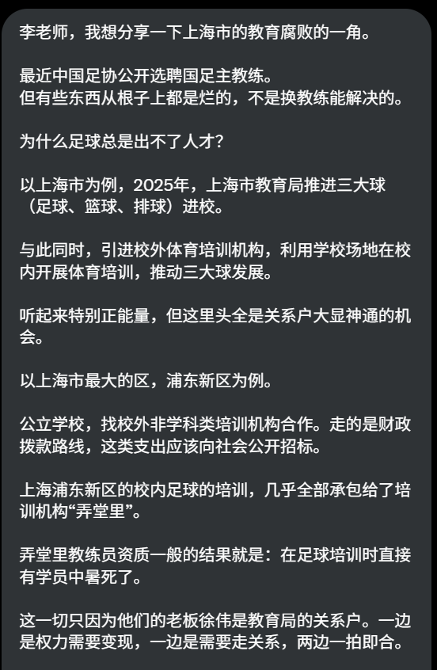
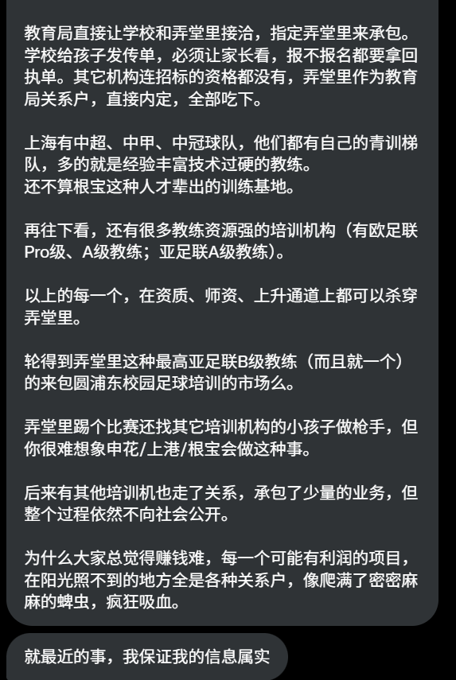

鼠尾草～🌿
@SalviaSWC
@whyyoutouzhele 我高中就是在上海浦东新区读的，从来没有经历(甚至是从同学听说过)过类似的事情，可以确定这是是谣言了。
大家知道，墙内官方支持利于他们自己的谣言的传播，所以大家拒绝相信，我认为这很好
但是墙外也有谣言，如果轻信某些谣言，后果可能非常严重。墙外的谣言也不比墙内少。为什么要不思考就相信呢？


李老师不是你老师
@whyyoutouzhele
网友投稿
李老师，我想分享一下上海市的教育腐败的一角。 https://t.co/Qd7ZQeAGVk